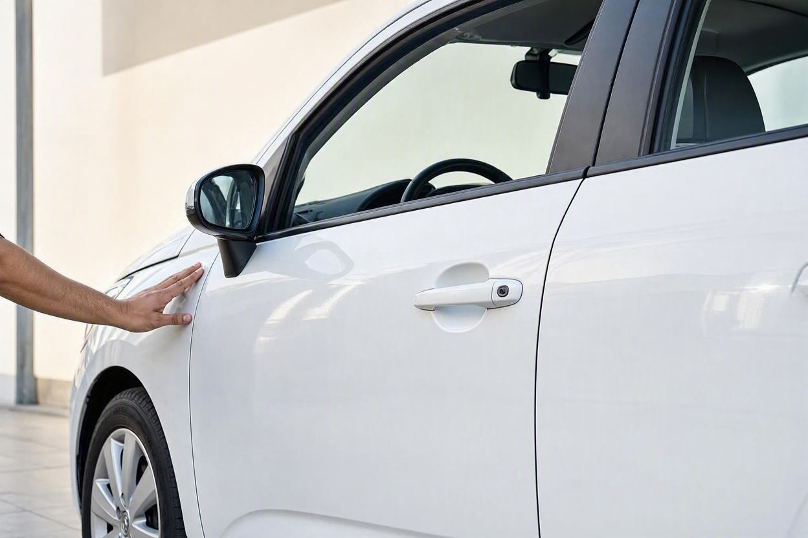
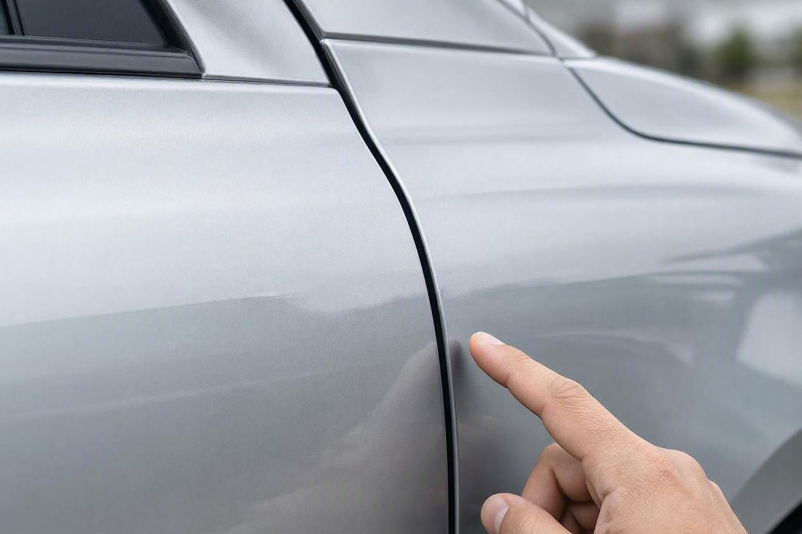
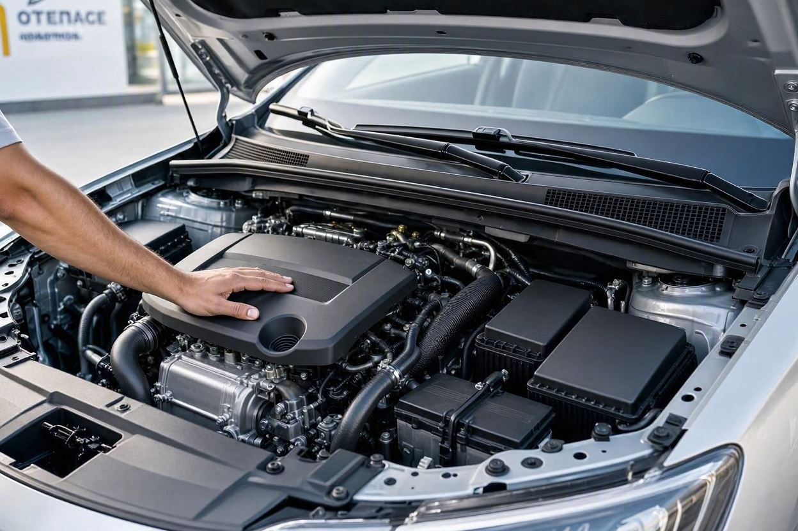
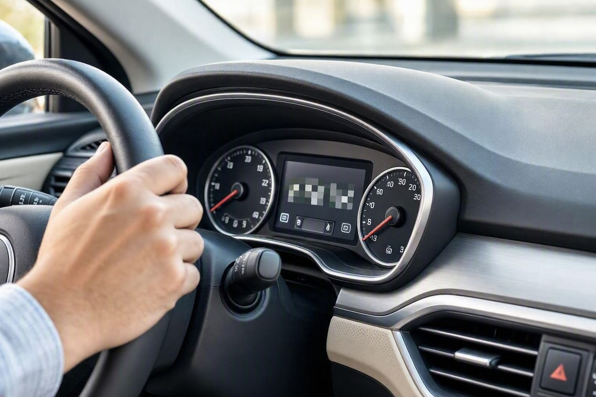
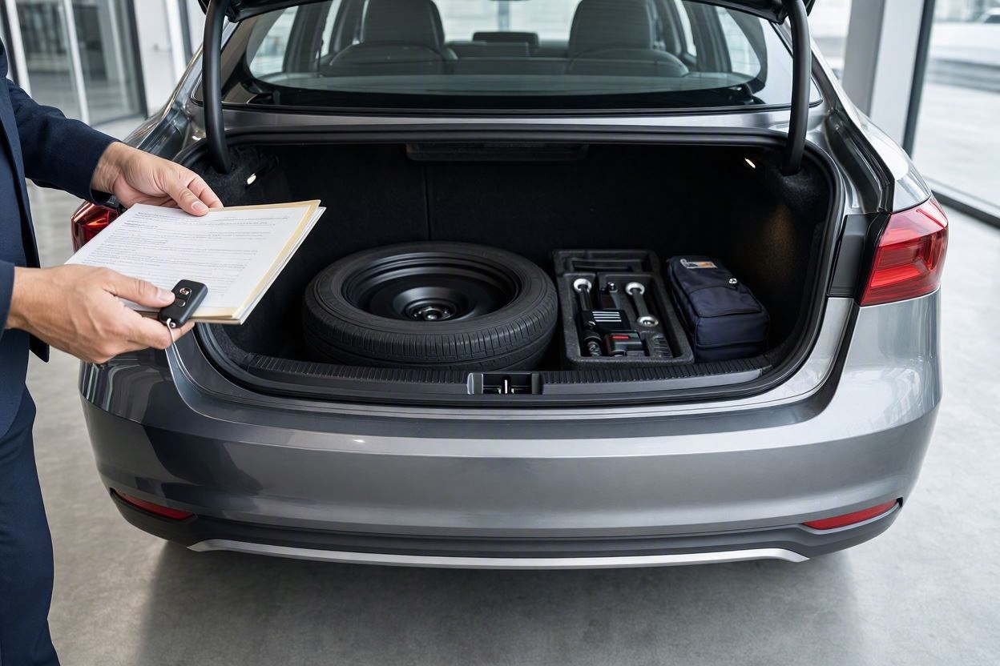

کارشناسی خودرو صفر لازم است؟ چکلیست تحویل از نمایندگی یا فروشنده
تصور کنید بعد از ماهها انتظار، بالاخره خودرو صفر شما آماده تحویل شده و فروشنده برگه تحویل را جلوی شما میگذارد. در همین چند دقیقه، بیشتر خریدارها فقط رنگ و مدل را نگاه میکنند و امضا میزنند. اما همین لحظه، بهترین و گاهی تنها فرصت شما برای ثبت هر ایراد است. مجموعه کارماچک در این راهنما نشان میدهد که یک خودرو نو چه چیزهایی باید کنترل شود و چرا نباید تحویل را ساده بگیرید.
بله، بررسی خودرو صفر هم لازم است. خودرو نو معمولاً مشکل فنی جدی ندارد، اما آسیب حمل و نقل، خط برداشتن رنگ، ایراد رنگ کارخانه، خرابی تجهیزات و کسری لوازم در خودروهای صفر دیده میشود. پیش از امضای برگه تحویل، بدنه، رنگ، موتور، کابین و مدارک را کنترل کنید و هر ایراد را همانجا مکتوب کنید تا حق پیگیری خود را حفظ کنید.
خلاصه در یک دقیقه
- خودرو صفر از خطر خالی نیست؛ آسیب هنگام حمل، توقف طولانی در انبار و ایراد رنگ کارخانه شایعترین موارد هستند.
- مهمترین زمان بررسی، پیش از امضای برگه تحویل است؛ بعد از امضا، اثبات ایراد بسیار سختتر میشود.
- بدنه و رنگ را زیر نور کافی و در روشنایی روز بررسی کنید، نه زیر سقف کمنور نمایندگی.
- کارکرد کیلومتر باید نزدیک صفر و منطقی باشد؛ کارکرد چند صد کیلومتری روی خودرو نو نیاز به توضیح دارد.
- مدارک، شماره شاسی، شماره موتور و لوازم همراه را با برگه تحویل تطبیق بدهید.
آیا خودرو صفر هم به بررسی نیاز دارد؟
خیلیها فکر میکنند خودرو نو یعنی خودرو بیعیب، پس بررسی آن کار اضافه است. این تصور تا حدی درست است، چون خودرو صفر معمولاً موتور و گیربکس سالم دارد و کارکرد نزدیک صفر است. اما «نو بودن» تضمین نمیکند که خودرو در تمام مسیر تولید تا تحویل، سالم مانده باشد.
یک خودرو نو از خط تولید تا پارکینگ نمایندگی، بارگیری میشود، جابهجا میشود، گاهی هفتهها یا ماهها در فضای باز یا انبار میماند و بارها روی خودروبر بالا و پایین میرود. هر کدام از این مراحل میتواند خراش، ضربه جزئی یا ایراد ظاهری ایجاد کند. کارشناسی خودرو صفر یعنی همین موارد را قبل از اینکه رسمی و قطعی شوند، پیدا کنید.
نکته مهم اینجاست که مسئولیت اثبات ایراد بعد از تحویل، معمولاً بر دوش خریدار میافتد. تا وقتی برگه تحویل امضا نشده، شما در موضع قویتری برای پیگیری هستید. برای همین، بررسی خودرو صفر بیشتر از آنکه درباره خرابی فنی باشد، درباره حفظ حق شماست.
چرا یک خودرو نو ممکن است ایراد داشته باشد؟
برای اینکه بدانید دنبال چه بگردید، بهتر است منشأ ایرادهای احتمالی خودرو صفر را بشناسید. این ایرادها معمولاً از این چند مسیر میآیند:
- آسیب هنگام حمل: خط و خش روی بدنه، ضربه به سپر یا رینگ در جریان بارگیری و تخلیه خودروبر.
- توقف طولانی: خواب چند ماهه خودرو باعث افت باتری، خشک شدن لاستیکها از یک نقطه و گاهی زنگزدگی سطحی میشود.
- ایراد رنگ کارخانه: تفاوت رنگ جزئی بین قطعات، پاشش ناهماهنگ یا وجود ذرات زیر رنگ که مربوط به خط تولید است.
- ترمیم پیش از تحویل: گاهی خراش جزئی در نمایندگی رنگ میشود بدون اینکه به خریدار اعلام شود.
- خرابی تجهیزات: نقص در سیستم صوتی، دوربین، سنسور، شیشهبالابر یا کولر که فقط با تست عملی مشخص میشود.
- کسری لوازم: نبودن زاپاس، جک، آچار چرخ، مثلث خطر یا مدارک، که بعد از تحویل جبران آن سخت است.
هیچکدام از این موارد به این معنا نیست که خودرو صفر شما حتماً ایراد دارد. اما هر کدام آنقدر شایع هستند که بررسی چند دقیقهای را ارزشمند کنند.

چکلیست تحویل خودرو صفر از نمایندگی یا فروشنده
این چکلیست را میتوانید هنگام تحویل کنار دست داشته باشید و مورد به مورد بررسی کنید. سعی کنید عجله نکنید و هر بخش را با دقت ببینید.
۱. بدنه و رنگ
- دور تا دور بدنه را از فاصله چند متری نگاه کنید و اختلاف رنگ یا بافت بین قطعات را بررسی کنید.
- لبه درها، دور چراغها و محل اتصال قطعات را از نظر خط و خش و پاشش رنگ کنترل کنید.
- فاصله لقی درها، کاپوت و صندوق باید یکنواخت باشد؛ لقی نامنظم میتواند نشانه جابهجایی قطعه باشد.
- سقف و لبهها را که کمتر دیده میشوند فراموش نکنید؛ خط افتادگی حمل اغلب همانجاست.
- شیشهها و آینهها را از نظر ترک، خط و سالم بودن مکانیزم بررسی کنید.
۲. بخش فنی و موتور
- درِ موتور را باز کنید و از نظر تمیزی، نبود نشتی روغن و آب و سالم بودن اتصالات نگاه کنید.
- خودرو را روشن کنید و به صدای موتور در حالت درجا گوش بدهید؛ صدای غیرعادی یا لرزش زیاد را جدی بگیرید.
- چراغهای هشدار داشبورد بعد از روشن شدن باید خاموش شوند؛ روشن ماندن چراغ چک را نادیده نگیرید.
- لاستیکها را از نظر سالم بودن، تاریخ تولید و باد مناسب بررسی کنید.
- اگر امکانش هست، یک تست رانندگی کوتاه بخواهید تا رفتار ترمز، فرمان و گیربکس را حس کنید.
۳. کابین و تجهیزات
- کیلومتر باید نزدیک صفر و منطقی باشد؛ کارکرد چند صد کیلومتری روی خودرو نو نیاز به توضیح دارد.
- تمام دکمهها، کولر، بخاری، شیشهبالابرها و سیستم صوتی را عملی تست کنید.
- سنسورها، دوربین عقب و سیستمهای کمکی را اگر خودرو دارد، امتحان کنید.
- روکش صندلی، داشبورد و تودوزی را از نظر پارگی، لکه و سالم بودن نگاه کنید.
- عملکرد قفل مرکزی و ریموت را روی همه درها بررسی کنید.

مدارک و لوازمی که باید هنگام تحویل بگیرید
بخش مهمی از تحویل خودرو صفر، کاغذبازی و کنترل لوازم همراه است. این موارد را جدا از بدنه و فنی، جداگانه چک کنید:
- تطبیق شمارهها:شماره شاسی و شماره موتور روی خودرو را با برگه تحویل، فاکتور و کارت خودرو تطبیق بدهید.
- مدارک رسمی:فاکتور فروش، برگه تحویل، سند یا قولنامه، بیمهنامه شخص ثالث و دفترچه گارانتی را کامل بگیرید.
- لوازم همراه:زاپاس سالم، جک، آچار چرخ، مثلث خطر، جعبه کمکهای اولیه و کیف مدارک را کنترل کنید.
- ریموت و کلیدها:تعداد کلید و ریموت اعلامشده را بگیرید و عملکرد هرکدام را تست کنید.
- شرایط گارانتی:سقف کیلومتر و زمان گارانتی، موارد تحت پوشش و شرایط ابطال آن را بخوانید تا بعداً غافلگیر نشوید.
پیش از امضای برگه تحویل، خیالتان راحت باشد
اگر درباره سلامت رنگ یا وضعیت فنی خودرو مطمئن نیستید، یک بررسی تخصصی میتواند ابهامهای تحویل را کمتر کند و از ثبت ایراد جا مانده جلوگیری کند.
رزرو کارشناسی خودرو
اشتباهات رایج هنگام تحویل خودرو نو
بیشتر مشکلاتی که بعد از تحویل پیش میآید، ریشه در چند اشتباه ساده دارد. اگر اینها را بشناسید، از اکثرشان دور میمانید:
- امضای برگه تحویل پیش از بررسی کامل بدنه و تجهیزات، فقط بهخاطر عجله یا خجالت.
- تحویل گرفتن خودرو در هوای بارانی یا نور کم، که ایرادهای رنگ را پنهان میکند.
- اعتماد به قول شفاهی فروشنده برای رفع بعدی ایراد، بدون ثبت مکتوب.
- نادیده گرفتن کنترل شماره شاسی و شماره موتور با مدارک.
- نشمردن و تستنکردن لوازم همراه و کلیدها در همان محل تحویل.
در عمل، بیشتر این اشتباهها از سر شتاب رخ میدهند. چند دقیقه صبر بیشتر هنگام تحویل، معمولاً از ساعتها پیگیری بعدی جلوگیری میکند. اگر میخواهید بررسی خودرو را حرفهایتر انجام دهید، میتوانید کارشناسی خودرو قبل از خرید را هم به فرایند تحویل اضافه کنید.
تحویل با بررسی در برابر تحویل بدون بررسی
این جدول کوتاه تفاوت دو حالت را نشان میدهد تا اهمیت چند دقیقه بررسی روشنتر شود.
| موضوع | تحویل با بررسی دقیق | تحویل بدون بررسی |
|---|---|---|
| ثبت ایراد ظاهری | پیش از امضا و قابل پیگیری | اغلب غیرقابل اثبات بعد از امضا |
| کسری لوازم همراه | همان لحظه مشخص میشود | بعداً جبران آن سخت است |
| ایراد رنگ یا خط حمل | قبل از قطعی شدن معامله دیده میشود | بهعنوان مشکل خریدار باقی میماند |
| آرامش خیال خریدار | بالا، با مستندات روشن | پایین، همراه با تردید |

چه زمانی سراغ کارشناس بروید
برای بیشتر کنترلهای ظاهری و اولیه، خودتان با همین چکلیست از پس کار برمیآیید. اما در چند حالت بهتر است بررسی را به یک کارشناس بسپارید:
- وقتی به اختلاف رنگ یا احتمال ترمیم بدنه شک دارید و با چشم مطمئن نمیشوید.
- وقتی خودرو مدت طولانی در انبار مانده و نگران وضعیت فنی و باتری هستید.
- وقتی خودرو را از فروشنده واسطه یا فردی غیر از نمایندگی رسمی تحویل میگیرید.
- وقتی رقم معامله بالاست و میخواهید بدون تردید تصمیم بگیرید.
کارشناس با ابزار دقیق مثل رنگسنج میتواند چیزهایی را ببیند که با چشم غیرمسلح قابل تشخیص قطعی نیست. البته توجه داشته باشید که هیچ بررسیای، چه توسط شما و چه کارشناس، تشخیص صددرصد و بدون خطا نیست؛ هدف، کم کردن ریسک است نه حذف کامل آن.
کارماچک خدمات کارشناسی خودرو را برای بررسی فنی، رنگ، بدنه و عوامل مؤثر بر ارزش معامله ارائه میدهد. رویکرد ما ساده است: فقط ایراد خودرو را شناسایی نمیکنیم؛ اثر آن روی هزینه تعمیر و ارزش واقعی معامله را هم مشخص میکنیم.
جمعبندی
خودرو صفر بودن، دلیل کافی برای رد کردن مرحله بررسی نیست. بیشتر ایرادهای خودرو نو نه در موتور، بلکه در بدنه، رنگ، تجهیزات و کسری لوازم دیده میشوند و همه اینها با یک بررسی چند دقیقهای پیش از امضا قابل کنترل هستند. مهمترین اصل این است: هر ایراد را قبل از امضای برگه تحویل و بهصورت مکتوب ثبت کنید. اگر تردید جدی داشتید یا معامله سنگین بود، بررسی تخصصی میتواند خیال شما را راحتتر کند.
با اطمینان خودرو صفر را تحویل بگیرید
اگر میخواهید پیش از امضای برگه تحویل، سلامت رنگ و بدنه خودرو نو را مطمئنتر بررسی کنید، کارشناسان کارماچک کنار شما هستند.
ثبت درخواست کارشناسیسؤالات متداول
آیا خودرو صفر واقعاً به کارشناسی نیاز دارد؟
بله. خودرو صفر معمولاً موتور و گیربکس سالم دارد، اما آسیب حمل و نقل، خط برداشتن رنگ، ایراد رنگ کارخانه و کسری لوازم در آن دیده میشود. یک بررسی چند دقیقهای پیش از امضای برگه تحویل، این موارد را روشن میکند و حق پیگیری شما را حفظ میکند.
مهمترین چیزی که هنگام تحویل خودرو صفر باید چک کنم چیست؟
پیش از هر چیز، بدنه و رنگ را زیر نور کافی و اختلاف رنگ بین قطعات را بررسی کنید. سپس کارکرد کیلومتر، عملکرد تجهیزات و تطبیق شماره شاسی و موتور با مدارک را کنترل کنید. هر ایراد را قبل از امضا مکتوب کنید.
کارکرد خودرو صفر باید چقدر باشد؟
کارکرد خودرو نو باید نزدیک صفر و متناسب با مسیر انتقال از کارخانه تا نمایندگی باشد. چند ده کیلومتر معمولاً طبیعی است، اما کارکرد چند صد کیلومتری روی خودرو صفر نیاز به توضیح شفاف از سوی فروشنده دارد.
اگر بعد از امضای برگه تحویل ایرادی پیدا کنم چه؟
بعد از امضا، اثبات اینکه ایراد پیش از تحویل وجود داشته بسیار سختتر است و مسئولیت معمولاً بر دوش خریدار میافتد. به همین دلیل بهترین کار، بررسی کامل و ثبت مکتوب هر ایراد پیش از امضاست. عکس و فیلم با تاریخ نیز میتواند کمککننده باشد.
آیا برای خودرو صفر هم رنگسنجی لازم است؟
در حالت عادی خودرو صفر نباید ترمیم رنگ داشته باشد، اما گاهی خراش جزئی پیش از تحویل رنگ میشود. اگر به اختلاف رنگ یا احتمال ترمیم شک دارید، بررسی با رنگسنج توسط کارشناس میتواند این ابهام را برطرف کند.
تفاوت تحویل از نمایندگی رسمی و فروشنده واسطه چیست؟
در تحویل از نمایندگی رسمی معمولاً مدارک و گارانتی مسیر مشخصی دارند. در تحویل از فروشنده واسطه، دقت بیشتری لازم است؛ اصالت مدارک، شرایط گارانتی و سلامت بدنه را با وسواس بیشتری کنترل کنید و در صورت تردید، بررسی تخصصی را جدی بگیرید.